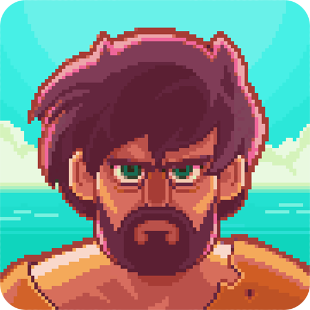

 Tinker Island - Survival Story Adventure
Details
 |
|
| Spielzeit | Nicht gespielt |
| Letzte Aktivität | Nie |
| Hinzugefügt | 04.12.2021 15:22:04 |
| Modifiziert | 10.11.2022 13:04:48 |
| Fertigstellungsstatus | Not Played |
| Bibliothek | Playnite |
| Quelle | |
| Plattform | Android |
| Veröffentlichungsdatum | 26.07.2016 |
| Community Bewertungen | |
| Kritiker Punkte | |
| Benutzerwertung | |
| Genre | Adventure |
| Entwickler | |
| Verleger | |
| Eigenschaft | |
| Links | |
| Tag | |
Beschreibung
You're cast away on a TROPICAL ISLAND. Become the leader of SURVIVORS in this lost PARADISE. Take them on an ADVENTURE of a lifetime - build a base, explore mysteries or forage treasures. Learn the art of crafting, foraging and exploring but keep in mind, there is never an idle moment in the everyday lives of the survivors.
⚓ ⚓ ⚓
FIGHT vicious enemies, tame savage beasts, kindle romance and solve RIDDLES. When the island SPEAKS to you, will you answer?
FEATURES:
➾ Lead a band of island survivors using simple swipes
➾ Choose your own adventure and try to survive
➾ Explore a huge lush world
➾ Experience a talking island
➾ Fight many dangers that lurk behind every bush
➾ Forage resources to survive
➾ Build a base and upgrade structures
➾ Match, stack and collect flowers in a cool mini game
➾ Craft weapons and tools
➾ Discover a gripping storyline
➾ Uncover the terrible secret of Tinker Island
Three survivors find themselves shipwrecked and lost, not by choice, on what is believed to be a tropical deserted island. As they start exploring and discovering Tinker Island, they find great treasures, forage resources, build buildings and items that they need to gather, craft, build or harvest to protect themselves against the unfamiliar environment and the dangerous episodes awaiting them. A normal guy, a tourist onboard a ship, is forced to become a forager, a fighter, a true hero in this mini world adventure game. Find mysterious ancient villages and buildings, left behind by either wayward settlers or scum, discover an unknown civilization, uncover steampunk contraptions, covered with rust and almost unidentifiable. Not only is there no wifi in the caves on the islands, the whole thing is nowifi.
As you progress and craft the needed tools, you slowly uncover the map, the monument, valley, the stars, the mountain and the treasures of the islands. If things don't pan out, retry. And then retry again. One hour, one life, yolo. There is plenty of wit and humor in the narrative, where you have to make the correct choices to progress through the story. Gather the needed resources to upgrade your buildings and unlock new areas and even new islands. Some are deserted islands, some are tiny islands with mysterious pasts, you may even come upon a Kraken. Maybe build a colony, a whole civilization in the rim of the world, but most of all, survive and complete the quests.
If you enjoy adventure games, survival games or even board games, this is definitely a game worth giving a go. It's a real treasure.
☠ WARNING! No wifi on the island. You're on your own!
⚓ ⚓ ⚓
FIGHT vicious enemies, tame savage beasts, kindle romance and solve RIDDLES. When the island SPEAKS to you, will you answer?
FEATURES:
➾ Lead a band of island survivors using simple swipes
➾ Choose your own adventure and try to survive
➾ Explore a huge lush world
➾ Experience a talking island
➾ Fight many dangers that lurk behind every bush
➾ Forage resources to survive
➾ Build a base and upgrade structures
➾ Match, stack and collect flowers in a cool mini game
➾ Craft weapons and tools
➾ Discover a gripping storyline
➾ Uncover the terrible secret of Tinker Island
Three survivors find themselves shipwrecked and lost, not by choice, on what is believed to be a tropical deserted island. As they start exploring and discovering Tinker Island, they find great treasures, forage resources, build buildings and items that they need to gather, craft, build or harvest to protect themselves against the unfamiliar environment and the dangerous episodes awaiting them. A normal guy, a tourist onboard a ship, is forced to become a forager, a fighter, a true hero in this mini world adventure game. Find mysterious ancient villages and buildings, left behind by either wayward settlers or scum, discover an unknown civilization, uncover steampunk contraptions, covered with rust and almost unidentifiable. Not only is there no wifi in the caves on the islands, the whole thing is nowifi.
As you progress and craft the needed tools, you slowly uncover the map, the monument, valley, the stars, the mountain and the treasures of the islands. If things don't pan out, retry. And then retry again. One hour, one life, yolo. There is plenty of wit and humor in the narrative, where you have to make the correct choices to progress through the story. Gather the needed resources to upgrade your buildings and unlock new areas and even new islands. Some are deserted islands, some are tiny islands with mysterious pasts, you may even come upon a Kraken. Maybe build a colony, a whole civilization in the rim of the world, but most of all, survive and complete the quests.
If you enjoy adventure games, survival games or even board games, this is definitely a game worth giving a go. It's a real treasure.
☠ WARNING! No wifi on the island. You're on your own!